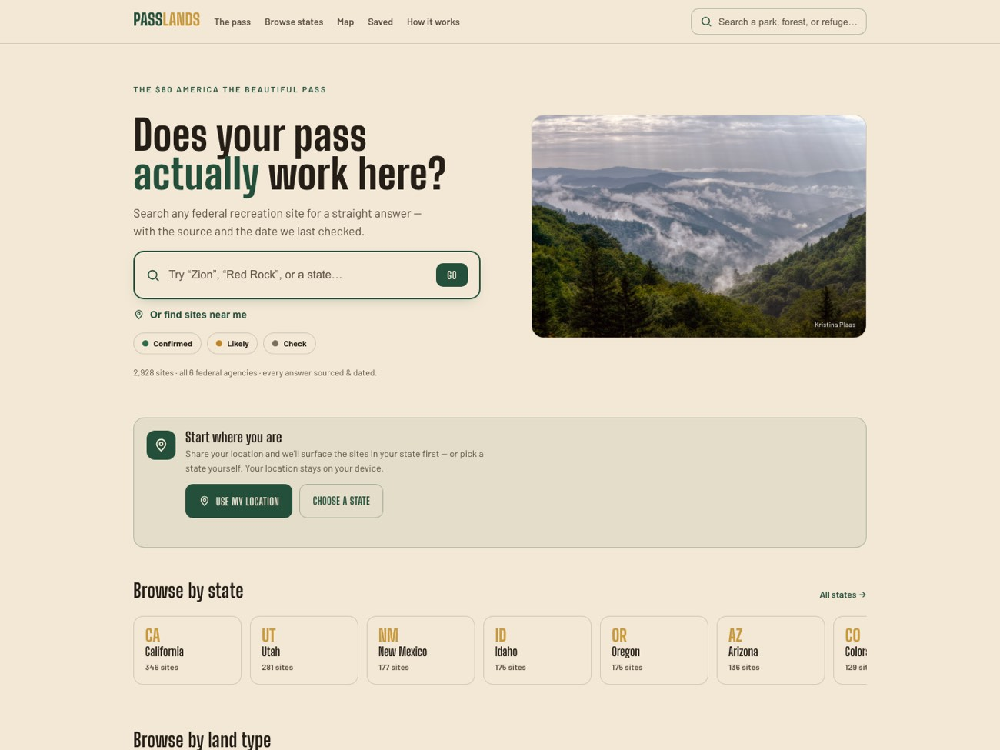

Passlands
Does the $80 America the Beautiful pass actually work at this site? A straight answer, with a source and the date it was last checked.

Know where your pass works.
The America the Beautiful pass costs $80 and covers federal recreation sites across six agencies: the Park Service, Forest Service, Fish and Wildlife Service, BLM, Bureau of Reclamation and the Army Corps of Engineers. No official comprehensive list of which sites actually honor it exists. That gap is the entire reason this product exists.
Passlands answers one question per site: is the pass honored here? Every answer carries a confidence tier, a source and the date it was last checked. I designed and built all of it, and it installs as an offline app with no account and no server.
Federal recreation sites, every answer carrying its source and a last-checked date
Managing agencies covered: NPS, USFS, USFWS, BLM, USBR and USACE
Accounts, servers and API keys. Saved sites live on your own device
Nobody publishes a list of where the pass works.
People buy the $80 pass and then guess. Each agency publishes its own fee information in its own format, and no one publishes a single list of which sites honor the pass. The result is people paying twice at the gate, or skipping a place they had already paid to enter.
The honest problem is that the underlying data is incomplete. Any product claiming certainty here would be lying. So the real design problem was not showing the answer, it was showing how much we actually know.
Search any federal recreation site for a straight answer, with the source and the date we last checked.
The promise on the Passlands home pageDesigned and built solo, data included.
I designed the product and built it: an Astro static site with typo-tolerant client-side search, Leaflet maps on OpenStreetMap so there is no API key to leak or pay for, and a service worker that makes the whole thing installable and usable offline, which matters because it gets used in places with no signal.
Two decisions shaped it.
Confidence tiers instead of a yes or no
The data is genuinely uncertain, so the interface says so. Every site reads as confirmed, likely or check, with its source and date attached. Of 2,928 sites only 734 are confirmed. Hiding that behind a green checkmark would have been the easier design and the dishonest one.
Offline first, because of where it gets used
You look this up at a trailhead or a gate, not at a desk. So it is a static site with on-device storage and no server call at the moment of use. The app shell and your saved sites work with no signal at all.
A reference that did not exist before.
Every federal agency in one place
2,928 sites across all six managing agencies, searchable together for the first time, with instant typo-tolerant search.
Sourced and dated, never asserted
Every record carries its source and the date it was last verified, so people can judge an answer instead of trusting it blindly.
Works where there is no signal
Installable as a PWA with an offline app shell and on-device saved sites, so it works at the gate rather than only at home.
Built to be replaced by better data
The record schema is frozen so a future data pipeline can swap in better sourcing without redesigning the product around it.